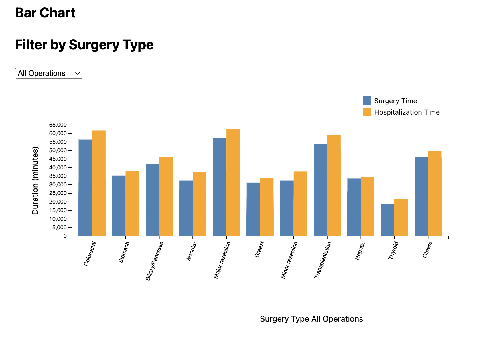

Process>

Title: XXXXX
Colors: XXXXX
Layout: XXXXX We initially started out with vertical columns as you can see in the images below but later opted for a horizontal bar chart to improve the accessibility of our graph. Because our axes labels are long surgery names, it makes it easier on the reader to place them in the natural reading direction. We also investigated the option of a butterfly chart in order to have a more distinct comparison between operations but ultimately decided against it as it was not as intuitive as the horizontal bar chart. The surgery duration bars were much longer than those of durgery durtaion and drew the attention away from the surgery durations.
Transitions/Interactivity: This plot was always intended to have at least a filtering of data such that viewers could filter by surgery type and further compare the values of hospital durations relative to surgery durations. However, we first began with a dropdown menu, then we replaced it with just clicking on the bars and the background for transitions. Lastly, in order to allow for
Annotations: XXXXX XXXXX
Other: XXXXX